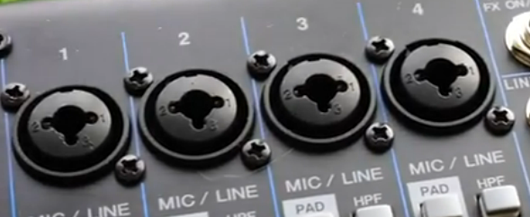
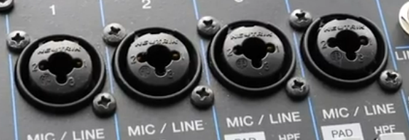
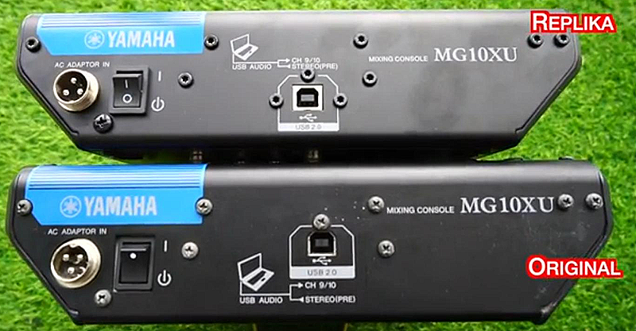
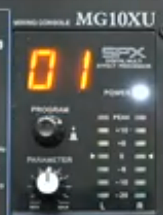
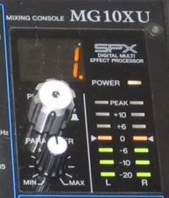

Все российские маркетплейсы типа OZON и Wildberries завалены поддельным микшерными пультами Yamaha линеек MG10XU, MG10XUF, (а так же MG12XU, MG12XUK). На сайте Avito так же куча предложений по продаже поддельных пультов, причем под видом оригинала.
В этой статье написано, как отличить оригинальные MG10XU и MG10XUF от подделок, и рассказывается об особеностях нейминга микшерных консолей YAMAHA серий MG10 и MG12.
Какие реально имеются модели серий MG10 и MG12?
Ознакомиться с фирменным рядом моделей этих микшеров можно по следующей ссылке на официальном сайте:
https://usa.yamaha.com/products/proaudio/mixers/mg_series_xu_model/index.html
Модели в серии MG именуются по следующему принципу:
Для варианта MG10XU основной моделью был выбран более компактный вариант с "крутилками" (knobs), и такая модель так и называется: MG10XU. Второй вариант был выщен с линейными фейдерами (faders), и такой вариант называется MG10XUF.
Для микшеров на 12 каналов было сделано наоборот: основной моделью был выбран вариант с фейдерами, и он называется MG10XU. А второй варинат был выпущен с "крутилками", и он называется MG12XUK.
Как отличить оригинал MG10XU / MG10XUF от подделки?
Хорошая новость состоит в том, что отличить оригинал от подделки можно просто по внешним признакам.
1. Входные микрофонные разъемы у подделки имеют только нумерацию контактов:

А у оригинала имеется надпись с производителем разъемов:

2. Множество отличий на задней стороне микшера:

У оригинала используются обычные винты под крестовую отвертку. У подделки большинство винтов под звездочку. Но главное, как располагаются винты: у оригинала только один винт прямо над USB-гнездом, он размещен очень некрасиво и неудачно. У подделки возле USB-гнезда сразу 3 винта. Это самое главное отличие.
Выключатель у оригинала имеет точечку, у подделки - стандартные китайские I/O.
На разъеме питания у оригинала есть сверху "ключ" (наплыв, чтобы правильно вставлять разъем), он крупный. У подделки ключ маленький или вовсе отсутвует.
У оригинала синяя надпись YAMAHA имеет "выборки" в краске, что бы обходить места размещения винтов. У подделки винты размещены так, чтобы вообще не попадать на синюю надпись.
Вообще, корпус китайской подделки выглядит более аккуратно и продуманней, чем корпус оригинала.
3. У оригинала и подделки имеются отличия в индикаторе выбранного DSP-эффекта. У подделки отображается ведущий ноль, то есть, вместо "1" пишется "01".
Это подделка:

А это оригинал:
